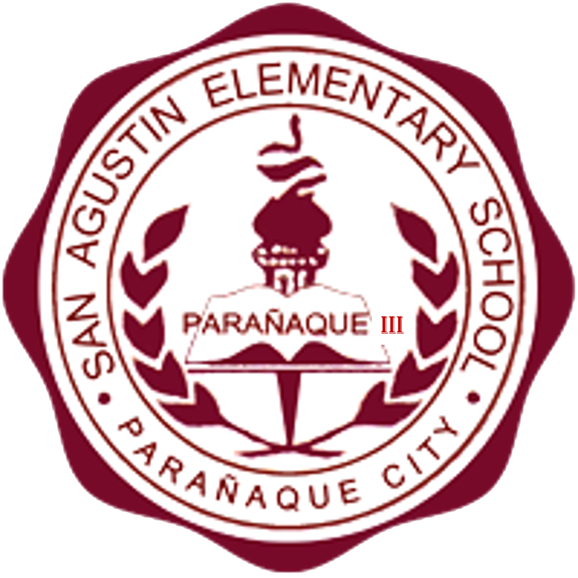
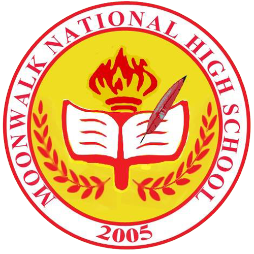
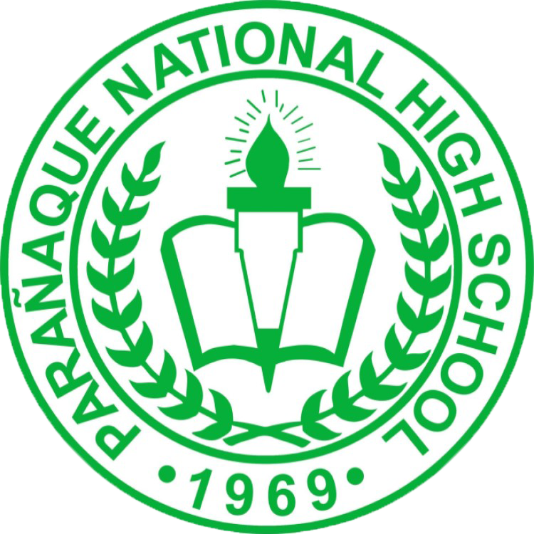

ELEMENTARY
Parañaque Elementary School Central

I started my elementary education here in Parañaque Elementary School Central. I thought this school was named Kabihasnan Elementary School Central since it is located in Kabihasnan here in Parañaque. I actually continued my pre-school here after I finished kinder 1 in a day care center in Salvador Estate in the same city. I finished my kinder years in PESC being in the top 3. Actually, I don't care about my academics that time since I am only a little kid back then. I still managed to get into the top. This is also where I had crush on my girl classmates. I had less than 10 crushes back then. My nature is that I get easily distracted on many things around me and i do not care about my primary goal. This is where my first grade starts to get messy.
In my elementary days in PESC, I was addicted to games such as Feeding Frenzy and Teddy Factory. I am not saying that because of these, my studies got messy. I just get distracted to the point that I cannot concentrate on my studies in my first grade. This is how I get into section 10 in the next grade when I was enrolled in a school in Brgy. Moonwalk.
San Agustin Elementary School
Here in San Agustin Elementary School, I was initially enrolled in section 10. Back then, there was a section system where they will base your academic performance to the section that you will go to. This time, I just got the hang of being in the 10th section.
I was doing fine in my class when my teachers decided for me to transfer into section 2. I missed my classmates back then because I would be moving into higher sections.
I was just doing things and drawing animals during my stay in my second grade. This is how I get my "Best in Arts" award in our closing program that year. Also, I got my rank 4 in my section as well.
During my third grade, I still do not care about my academics since I my goal is just to go to school and make some friends. I just want to have fun. This is until I was in the fourth grade that I asked my mom what is my top since I forgot it. When she said that I was in top 3, I became encouraged.
During my fourth grade, I tried my best to perform in school. I am top 11 in the first quarter, top 7 in second quarter, and top 6 in third quarter. The fourth quarter was not announced but my final rank is 9th.

In my fifth grade, I continued to excel in academics. I do not aimed for the top 1 since one of my classmates back then deserve it more. I do not remember what was my rank in each individual quarter, but what I know is that I am top 6 in academics alone. However, I have no extracurricular activities joined. This is why I was in top 15.
I've learned many things during my fifth grade: on how to compete. This was a tough one since our parents are having feuds but we are just chilling and studying. With regards to my rank, I was in top 5 in first quarter and top 3 in second and third quarters. The ranking in fourth quarter is not usually announced since it is the end of the school year. I got the fourth rank or second honorable mention when I graduated elementary.
HIGH SCHOOL
Moonwalk National High School
This is my new journey in my academics. This time, I was so excited and optimistic on what type of students will I meet. Actually it is a regular day for me to attend classes in Moonwalk when the day comes that I was qualified in Special Science Class Program (SSCP), later known as STE Program (Science, Technology, and Engineering Program). In fact, I am not expecting that I will be the top 1 of the class in the first quarter of my 7th grade.
This is how I built my competitive nature. I studied hard and hard just to maintain my top. I also worked hard for the elective subjects we are taking. I always pray that I will get the first rank every quarter. Also, I started to compete in other schools like Parañaque National High School - Main and Parañaque Science High School. I finished grade 7 being in the top 1 along with my other awards.
I continued my hard work in my eighth grade. This is my most glory school year of my life. The highest extracurricular achievement for me that time is that I became first in Maunawang Pagbasa or Reading Comprehension in Filipino. I did not expect that. This year, I got the top 1 once again along with my most number of awwards.
In my ninth grade, things are supposed to get more excited until I was in top 2 in the second quarter. I still look forward to be in the first rank but it was tough for me. My adviser that time advised me that ranking is not that important. It is the hard work that you put into it. Overall in the ninth grade, I was in the top 2. I'm still happy for that because I was ranked 7th in the fourth quarter.
There comes the tenth grade. This is my busiest school year in junior high. I was the Editor-in-Chief in our school paper "The Moonwalk Quill". I once thought of being a journalist someday but I ended up deciding to take BSIT in college. This is my plan since grade 7 where I wanted to be an app developer. I was also the president of Science Club. However, in the fourth quarter, my mother was dissapointed to me because I got the 9th rank, but we accepted it. Fortunately, I got the third rank in my completion of junior high.
Parañaque National High School - Main
Taking whether STEM or ICT became a crucial choice for me since I love Science and Technology. I took STEM initially because of my interest in science, but it became clear to me that I got most perks if I am in STEM, including the DOST-SEI S&T Scholarship.
I have leared so many things during my senior high years. I learned to be contented in my academics as long as I got passing grades. I learned to be with my new friends on how to socialize with them. Also, I participated in many contests and enjoyed them a lot. I joined in a band with my classmates and we participated in a contest organized by DOST. I also joined in a journalism club named "Ang Dagitab" and I was the technical operator in Radio Broadcasting. I also won the 5th place in JPL Cup Newswriting category in Philippine Normal University. This is by far my highest extracurricular achievement because it includes many schools here in Metro Manila including Manila Science High School, Makati Science High School, De La Salle University, etc.

I also learned that there are many people that I cannot be in my side. There are the ones that are secretly hiding their true intentions. I am not saying that my classmates in SHS are not friendly to me or that I am the least liked person in the classroom. I am just saying that I have met many people with various backgrounds since PNHS-Main is a lot bigger school than anywhere else here in Parañaque.
There comes the threat of formerly known Novel Coronavirus 2019, currently known as Coronavirus Disease 2019 (COVID-19). We were supposed to graduate face to face when lockdown was issued in our country. Despite of the outcomes brought by the pandemic, we still graduated virtually, though it is still more fun graduating in a formal venue.
Despite of the difficulties experienced in SHS, it is still a fun experience especially I was granted a scholarship by DOST-SEI after I graduated high school.
COLLEGE
Here comes college. I am finally in college. This is the year that I am going all out while having fun. I chose Bachelor of Science in Information Technology in PUP Parañaque. I was supposed to chose Bachelor of Science in Computer Science in TUP Manila, but I realized that employers prefer PUP the most among all the universities here in the Philippines.
In my first year, I am just doing my tasks in academics and I am not thinking about the rank. I am honestly sick and tired of that. As long as I am going towards my goal, I am just doing my role as a student. When the second semester comes to close, I was elected as class vice president of the class. But our president dropped from the class, so I assumed the office. It was really hard to be a class president. This is not just about the dominance of being in a position, but it is the responsibility you are carrying. This time, I felt like I am holding everyone's life being their assumed president.
The transition for the next year got even tougher because of my mother's death and invitation for me to become the next AICTS President. I accepted the position when I was elected in the organization.
Departing the organization, I was relieved when I finally found my heir to the throne. My classmate, Vincent Andrew Salanga, is the current president of the organization in this year 2023. This should be a challenge to him since we are in the transition of going back to face-to-face classes. I am always rooting for him since I know the struggles of being a president, especially that we are not in online classes anymore.
I decided to run in office for Finance Chairperson for Audit in Central Student Council (CSC). Fortunately, I also won the position. During my term being the FCA, we became shocked of what face-to-face events were. We are not used to hold such school events like we are holding online. This is where we were strucked by reality that school events are not to be held if we lack money and manpower. This is where the Finance Chairpersons take place. We are the ones responsible for spending, receiving, and recording all of the financial transactions in all of the activities of the school. Being the Finance Chairperson for Audit, I am in charge of recording, or auditing, all of the money spent and received.
Before our term ends, I set my mind that I would become the president of the Central Student Council if no one accepts the role. That is the worst case scenario for me. I have no enough confidence to run such a huge position and to accept a great responsibility. I prepared a party name in case that worst case scenario happens. Fortunately, our outgoing secretary accepted the role. I gave most of my ideas to the party during our campaign and I leave the rest to others. Again, we won the election.
Currently, I won the position of Finance Chairperson for Treasury, and this is another crucial role in the council. I will be responsible for the possession of all monetary transactions. Reyziel's, our current president, administration seems to be a better one compared to the previous one because of the execution of the council routines. I hope that this will be a better administration that will cater the needs of the students.